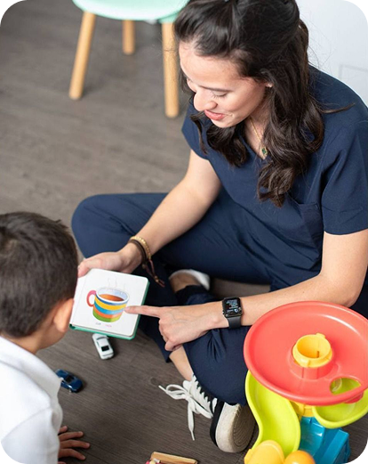
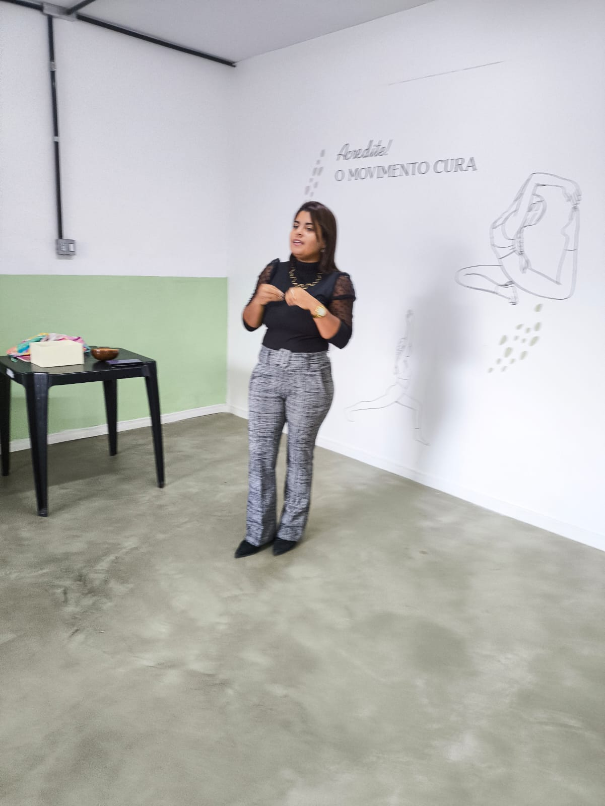

Se seu filho apresenta dificuldade para aprender, falta de atenção ou está atrasado na leitura e escrita, o acompanhamento psicopedagógico pode ajudar.

Seu filho não aprende como deveria

Tem dificuldade na leitura ou escrita

Não consegue manter a atenção

A escola já sinalizou dificuldades

Parece estar ficando para trás
Culpa
Ansiedade
Medo do futuro
Cansaço
Ele busca entender como a criança aprende, identificar dificuldades e potencialidades, e construir estratégias personalizadas que realmente funcionem para ela.
A partir disso, são traçadas intervenções mais eficazes, respeitando o tempo, as necessidades e a individualidade de cada criança.

Melhora na leitura e escrita mais foco e atenção organização nas tarefas mais confiança e evolução no aprendizado
Passa a entender o que está acontecendo se sente mais segura para de se culpar aprende como ajudar o filho e vive com mais tranquilidade
O processo começa com encontros iniciais, onde é feita uma análise cuidadosa para compreender as dificuldades e necessidades da criança.
A partir da avaliação, é elaborado um plano de intervenção personalizado, focado no que a criança realmente precisa.
Sessões regulares promovem o desenvolvimento das habilidades de aprendizagem, atenção, leitura, escrita e organização.
Durante todo o processo, a família recebe apoio e orientações para ajudar a criança também em casa.
Esse atendimento é indicado para crianças e adolescentes que apresentam:
Sou Mileid Lacerda, psicopedagoga, atuo com acolhimento e acompanhamento de crianças, adolescentes, adultos e idosos que apresentam dificuldades no processo de aprendizagem.
Meu trabalho é baseado na escuta, no olhar individualizado e na construção de estratégias que respeitam o tempo e as necessidades de cada pessoa, integrando aspectos emocionais e cognitivos.

O atendimento pode ser realizado presencialmente, com visitas domiciliares ou de forma online, adaptando-se às necessidades e conveniência da família. O foco é sempre o desenvolvimento completo da criança.
O primeiro passo é entender o que está acontecendo.
Clique no botão abaixo e agende uma avaliação.
Você será acolhida, orientada e terá clareza sobre os próximos passos.
Ela acontece nos primeiros encontros, até o 4º, onde analisamos o funcionamento da criança para definir a melhor abordagem.
O ideal são 2 sessões semanais, mas isso pode ser ajustado conforme a necessidade da família.
Cada sessão tem duração de 50 minutos.
Sim. Você recebe orientações para ajudar seu filho também em casa.
Sim, também realizo atendimento online.